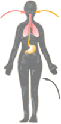

Kidneys
and Metals Explore the world
of renal toxicology, and learn the effect of metals on the kidneys
and on kidney cells.
Toxicology
Discover ways chemicals can affect human health and develop
an understanding of fundamental principles of toxicology.
Lung
Toxicology Review the basics of lung anatomy and function
and learn about toxicology in the lungs, diseases of
the lungs, and environmental tobacco smoke.

The Southwest
Environmental Health Sciences Center has supporting materials
for the Chemicals and Human Health site and lots of other environmental
health activities and curricula.
Hydroville
The good citizens of Hydroville need you to help them
solve their environmental health problems. A website developed
by the Hydroville Curriculum Project at Oregon State University.
|